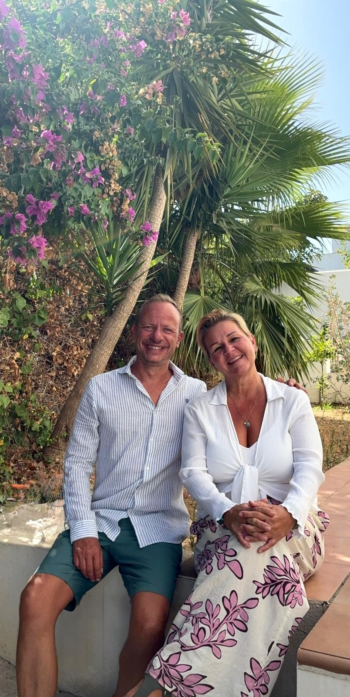
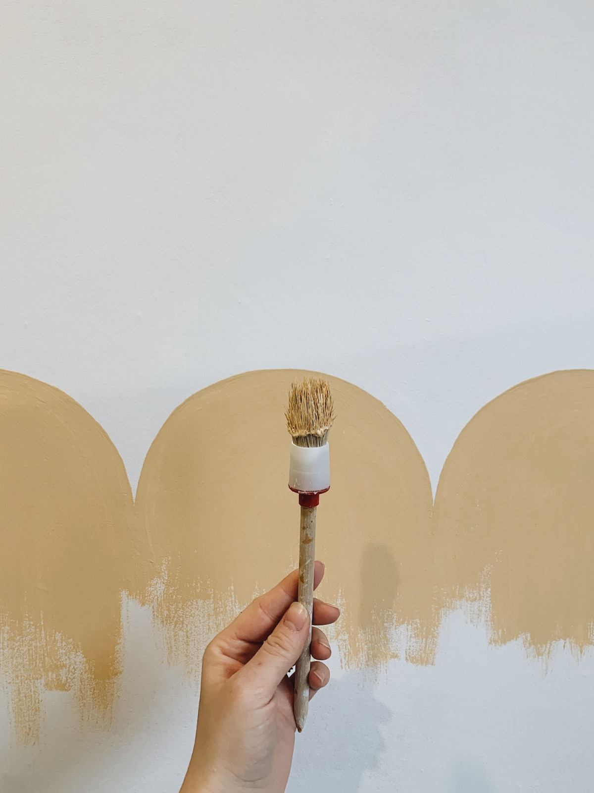
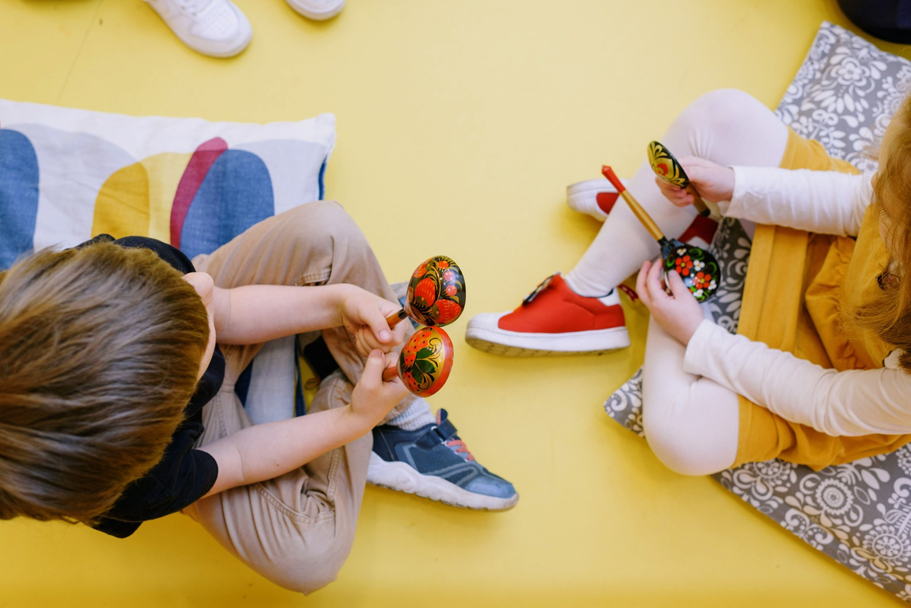
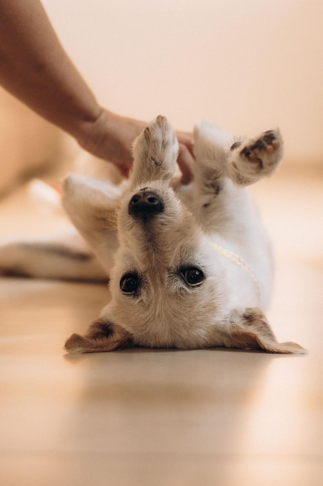

Deine Immobilie, Familie & Gäste in besten Händen an der Costa del Sol.
Jetzt Kontakt aufnehmen
Es gibt Orte, an denen man sich sofort zuhause fühlt. Für uns ist Manilva genau so ein Ort geworden. Die Sonne, das Meer, die Menschen – und dieses Gefühl, dass das Leben hier ein bisschen süßer schmeckt.
Als wir hier ankamen, wussten wir nicht, dass wir einmal „die guten Nachbarn“ für so viele Menschen werden würden. Heute sind wir genau das: Gabriella und Marco – zwei Menschen, die sich kümmern, anpacken und mit Herz dafür sorgen, dass dein Zuhause an der Costa del Sol in den besten Händen ist.
Unsere Geschichte ist keine klassische Unternehmensgeschichte. Es gab keinen Businessplan, keine Strategie. Es gab nur uns – und die Menschen um uns herum. Viele Eigentümer pendeln zwischen Ländern, empfangen Gäste, renovieren oder sind einfach nicht immer vor Ort. Und immer wieder hörten wir denselben Satz: „Ich brauche jemanden, dem ich wirklich vertrauen kann.“
Persönlicher Einsatz vor Ort, auf den Du blind vertrauen kannst
Wir behandeln Dein Eigentum mit derselben Sorgfalt wie unser eigenes.
Gabriella ist diejenige, die jedes Zuhause sofort „spürt“. Sie sieht, was getan werden muss, noch bevor du es aussprichst. Mit der Fürsorge einer Mutter kümmert sie sich um Kinder, Haustiere und Gäste – und mit der Gründlichkeit einer Perfektionistin sorgt sie dafür, dass jedes Zuhause sauber, ordentlich und einladend ist.
Ob Reparaturen, Instandhaltung, Transport oder technische Handgriffe – Marco packt an, wo andere aufgeben. Mit handwerklichem Geschick und Pragmatismus sorgt er dafür, dass technisch alles reibungslos läuft und jedes Problem gelöst wird.

Wir kümmern uns mit Herz um alles, was dein Zuhause schöner und sicherer macht.
Ob frischer Anstrich oder kleine Reparaturen – wir packen an, damit dein Zuhause immer in bestem Zustand bleibt. Wir arbeiten sauber, sorgfältig und hinterlassen jeden Raum besenrein.
Wir passen liebevoll auf dein Zuhause auf, wenn du weit weg bist.
Wir kümmern uns um dein Zuhause, wenn du nicht vor Ort bist – zuverlässig, aufmerksam und mit viel Herz. Wir lüften, kontrollieren, gießen Pflanzen und leeren den Briefkasten.
Wir bereiten alles warm und persönlich vor, damit du oder deine Gäste sich sofort zuhause fühlen.
Stell dir vor, du kommst nach einer langen Reise an, und alles ist bereits perfekt vorbereitet. Frische Lebensmittel, gekühlte Getränke, Brot, Blumen und lokale Spezialitäten warten auf dich.
Wir empfangen deine Gäste mit echter Herzlichkeit und sorgen für einen rundum schönen Aufenthalt.
Deine Gäste sollen sich willkommen fühlen – und genau dafür sorgen wir. Wir übernehmen Check-in, Check-out, Schlüsselübergabe und Einweisung.

Wir betreuen deine Kinder mit derselben Liebe, die wir auch unserer eigenen großen Familie schenken.
Als Eltern von fünf und stolze Großeltern schätzen wir jeden Moment mit Kindern. Deine Kleinen erhalten echte Aufmerksamkeit, Wärme und eine sichere Umgebung.

Wir kümmern uns mit viel Liebe und Geduld um deine Fellnasen, als wären sie unsere eigenen.
Tiere sind Familienmitglieder – und genauso behandeln wir sie. Wir füttern, gehen spazieren, spielen und geben Medikamente, wenn nötig.
"Ich musste für zehn Tage ins Ausland reisen und wollte meine liebe Hündin Tigi nicht mitnehmen. Gabriella und Marco haben Tigi bei sich aufgenommen und sich um sie gekümmert wie um ihren eigenen Hund."
"Ich vermiete meine Wohnung in Manilva über Airbnb. Gabriella und Marco managen die Kurzzeitvermietung seit vielen Monaten perfekt: Die Wohnung ist immer makellos sauber und Gäste werden herzlich empfangen."
"Ich brauchte dringend einen frischen Anstrich für meine Wohnung in Sotogrande. Gabriella und Marco kamen pünktlich, arbeiteten sauber und viel schneller als erwartet. Absolut fair und von Herzen!"
Wir verwalten Ihren Ersatzschlüssel absolut sicher und übernehmen die persönliche Übergabe vor Ort für Sie, Handwerker oder Gäste.
Im Ernstfall sind wir schnell zur Stelle. Nach Unwettern kontrollieren wir Ihre Immobilie proaktiv und koordinieren sofort vertrauenswürdige Handwerker.
Unser Schwerpunkt liegt in Manilva und der umliegenden Costa del Sol – von Gibraltar bis Marbella.
Wir bieten sowohl flexible Pakete für die laufende Betreuung als auch individuelle Abrechnungen nach Aufwand.
Wir freuen uns darauf, Dich und Dein Anliegen kennenzulernen.